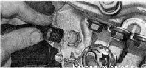
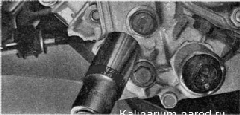

Выключатель фонарей заднего ходаснятие и установкаДля выполнения работы потребуется смотровая канава или эстакада. Снятие 1. Подготавливаем автомобиль к выполнению работы. 2. Снимаем брызговик двигателя или защиту картера (если установлена). 3. Сливаем масло из коробки передач. При необходимости можно переустановить выключатель не спивая масло, но при этом неизбежен частичный разлив масла. Такую операцию следует выполнять, подставив широкую емкость. 4. Отсоединяем от выключателя колодку жгута проводов. 5. Накидным ключом или торцовым ключом с глубокой головкой на 22 мм отворачиваем выключатель и снимаем его. 
Установка 1. Устанавливаем выключатель света заднего хода в обратной последовательности. 2. Заливаем масло в коробку передач. |